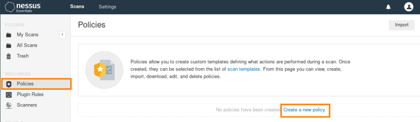

Nessus
Nessus has two components:
•
client: used to configure the scans via web interface
•
server: perform the scanning processes by sending probes to systems and applications, collecting the responses and matching them against its vulnerability database and report the results back to the client
1.
Port Scanning: determine which hosts are alive and which ports are open on them
2.
Service Detection: for every open port found, will send probes to determine which application (name and version) is running on them
3.
Vulnerabilities Database Lookup: for each detected service(daemon), the scanner queries its database looking for known vulnerabilities.
4.
Probing: Nessus send probes to verify if the vulnerability exists
Install
SITE:
https://www.tenable.com/downloads/nessusinstall .deb file downloaded:
dpkg --install Nessus-8.9.1-debian6_amd64.deb
Update Nessus
/etc/init.d/nessusd stop #before updating sht down nessus service
/opt/nessus/sbin/nessuscli update
Configure Nessus
start the service:
/etc/init.d/nessusd start #or "service nessusd start"
from the webpage of Nessus:
When we have to scan a target machine we have to create a
policy suitable for the OS of that machine
options of a policy:• parameters for scan timeout
• numbers of host
• ports
• services to scan
• credentials to use
• plugins to use
• ...
{kind=link}